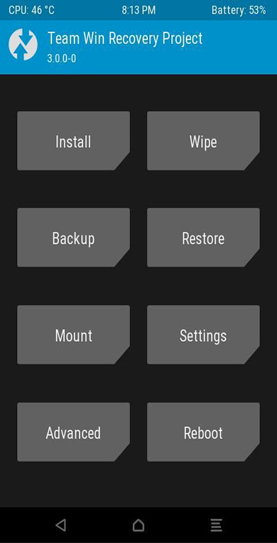
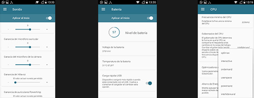

HUAWEI Y530
Teléfono con procesador Qualcomm msm8210
Cámara trasera de 5 megapixeles y cámara delantera de 0.3 megapixeles
Memoria ram de 512 MB
Memoria rom de 4 GB disponible como almacenamiento interno 1.3GB
DESARROLLO ACTUAL
RECOVERY TWRP 3.0.0
Requerimientos:
Root
Instalación:
Descargar "recoveryTWRP 3.0.02(2).img" y renombrar
a "recovery.img" luego, abrir Flashify y presionar "Recovery image". Luego buscar
el archivo descargado. esperar y reiniciar. Listo!
Foro XDA-Developers

KERNEL SOULFIRE
Requerimientos:
- Force fast charge
- CPU optimization governor: Ondemand
- New governors CPU: Intellidemand, Optimax
Requerimientos:
Instalación:
extraer el archivo "ADB y fastboot" en el escritorio
También extraer el archivo "boot.zip"
copia y pega el boot.img extraído de "Boot.zip en el" ADB y fastboot "
apagar el teléfono y encienda. Luego fasboot (vol - y mantener el poder hasta que esté pantalla blanca con el logo de Android)
PC a móvil y en el "ADB y fastboot" carpeta botón derecho del ratón y conectarse a abrir una ventana de comandos aquí
abrir el archivo "comando de arranque intermitente" coper el segundo comando es "boot.img fastboot flash de arranque" sin las comillas ""
copiar o pegar en la ventana de cmd fastboot pagan algunas cosas.
Que se restablecerá solo si no Coper y pegar "fastboot reboot" de comandos sin comillas
reinicia y listo.
Foro XDA-Developers

TEAM PHOENIX en Facebook